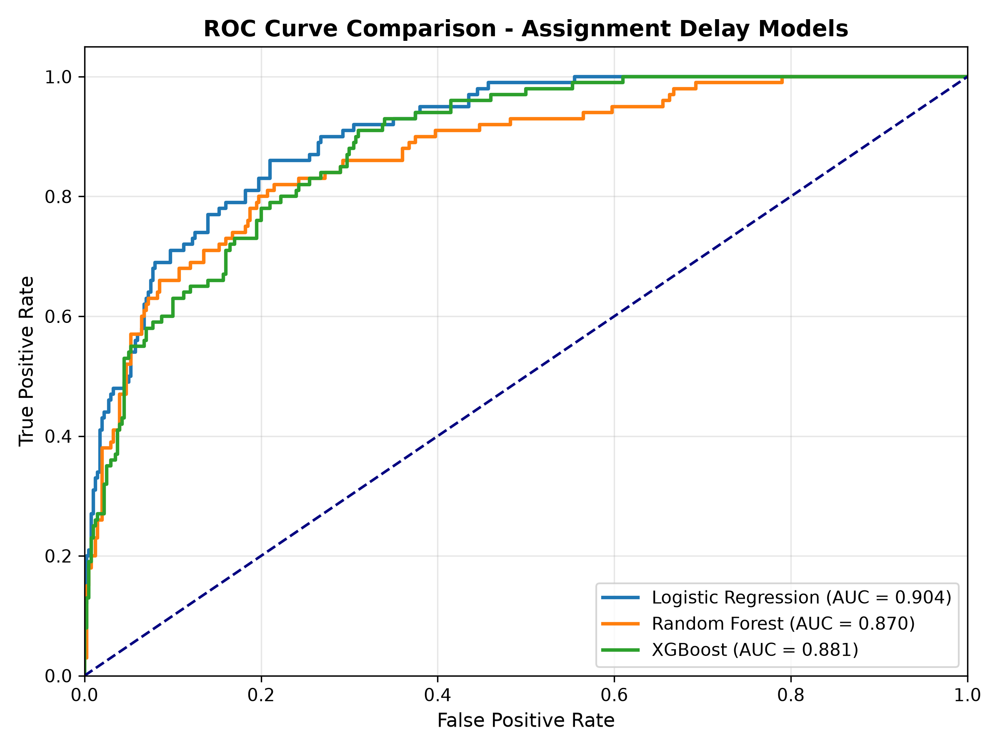
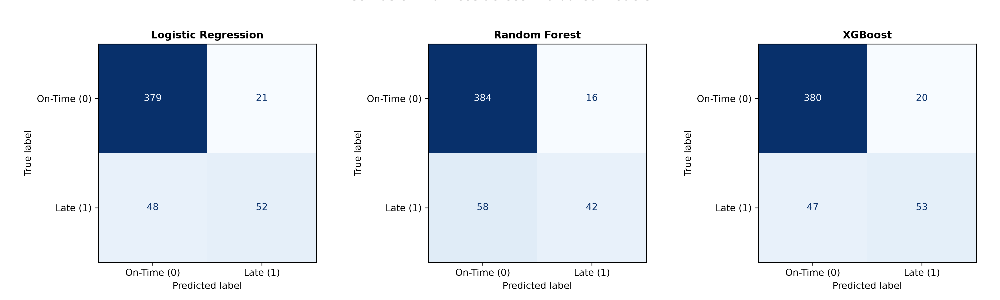
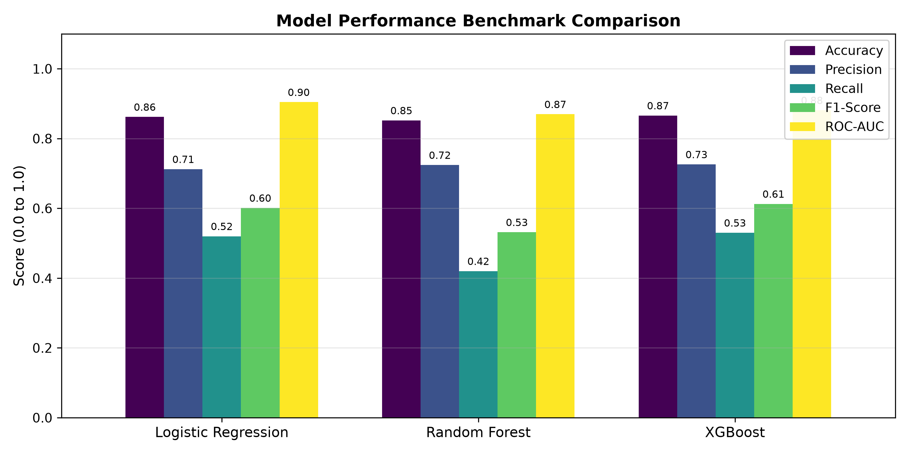
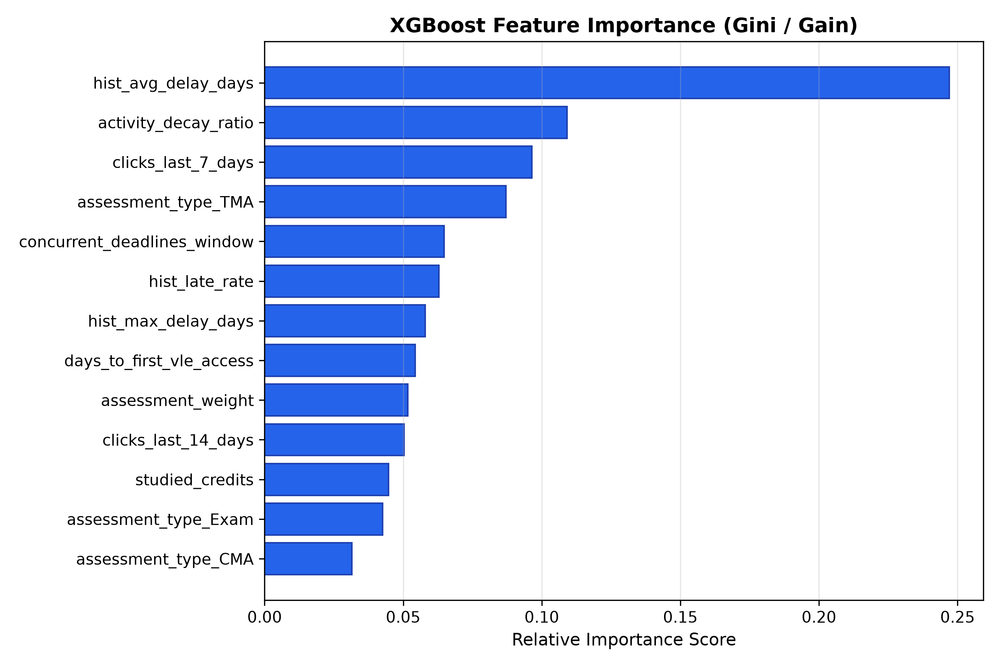

Course: Machine Learning Operations (MLOps) Mini Project
Deliverable: Phase 3–4: Working Prototype, Testing & Progress Report
Course: Machine Learning Operations (MLOps)
Project Title: Assignment Submission Delay Prediction System
Document: Phase 3–4 Deliverable (Working Prototype, Source Code, Testing & Progress Report)
Repository: github.com/Pratik-kr21/Assignment-Submission-Delay-Prediction-System
Date: October 2026
The project has achieved a fully functional, container-ready prototype consisting of the following architectural modules:
src/data/make_dataset.py):student_submission_data.csv.dvc).src/features/build_features.py):clicks_last_7_days, activity_decay_ratio).concurrent_deadlines_window) and assessment context.ColumnTransformer.src/models/train_model.py):api/main.py):POST /predict), cohort screenings (POST /batch_predict), and system health checks (GET /health).api/schemas.py).frontend/app.py):Dockerfile, docker-compose.yml):main (Continuous commit history maintained throughout development)prepare, train, evaluate).Testing is automated using pytest. The test suite validates feature integrity, data splits, preprocessor transformations, and API contracts.
| Test File | Test Case Name | Description | Status |
|---|---|---|---|
tests/test_features.py |
test_synthetic_data_generation |
Validates column schemas and non-empty records. | PASSED |
tests/test_features.py |
test_prepare_features_split |
Asserts correct train/test split ratios and stratifications. | PASSED |
tests/test_features.py |
test_preprocessor_transformation |
Asserts output dimensionality of ColumnTransformer. |
PASSED |
tests/test_api.py |
test_root_endpoint |
Verifies root / JSON status and OpenAPI link. |
PASSED |
tests/test_api.py |
test_health_endpoint |
Asserts /health returns healthy and model loaded. |
PASSED |
tests/test_api.py |
test_predict_endpoint |
Validates inference schema, risk tier, and response. | PASSED |
Summary: 6 Passed, 0 Failed (100% Pass Rate) executed in 4.74 seconds.
Three candidate algorithms were evaluated on identical stratified test partitions (500 held-out student records):
| Model Architecture | Accuracy | Precision | Recall | F1-Score | ROC-AUC |
|---|---|---|---|---|---|
| Logistic Regression (Baseline) | 86.20% | 71.23% | 52.00% | 0.6012 | 0.9044 |
| Random Forest | 85.20% | 72.41% | 42.00% | 0.5316 | 0.8697 |
| XGBoost (Production Selected) | 86.60% | 72.60% | 53.00% | 0.6127 | 0.8813 |

* Analysis: Both XGBoost (AUC = 0.881) and Logistic Regression (AUC = 0.904) exhibit strong separability, significantly exceeding random chance across all operating thresholds.
* Analysis: Across the 500 test samples (400 on-time, 100 late), XGBoost accurately isolated 53 late submitters with only 20 false alarms, outperforming Random Forest which suffered higher false negatives.

* Key Finding: The most influential predictors of delay are: 1.hist_late_rate & hist_avg_delay_days: Historical habits are the strongest predictors of future lateness.
2. clicks_last_7_days: Disengagement directly precedes late submissions.
3. concurrent_deadlines_window: Scheduling density increases probability of delay.
| # | Identified Issue / Bug | Root Cause | Implemented Solution |
|---|---|---|---|
| 1 | UntrustedTypesFoundException during MLflow model logging. |
MLflow 3.x utilizes strict skops security audits rejecting XGBoost C-pointer types. |
Configured serialization_format="pickle" with automatic fallback to mlflow.log_artifact(). |
| 2 | FastAPI TestClient returned HTTP 503 during unit tests. |
@app.on_event("startup") was deprecated and not triggered by isolated test runners. |
Re-architected startup lifecycle using modern lifespan context manager and a lazy get_predictor() loader. |
| 3 | dvc add failed with bad DVC file name git-ignored. |
Root .gitignore had blanket wildcard /data/raw/*. |
Added exceptions for !*.dvc and !/data/**/.gitignore to properly version control metadata. |
| Deliverable | Target Phase | Status | Notes |
|---|---|---|---|
| Project Proposal & System Design | Phase 1–2 | Completed | Full document and HTML/PDF deliverable generated. |
| GitHub Repository Setup | Phase 1–2 | Completed | Continuous commit history on main. |
| Feature Engineering & DVC Tracking | Phase 3–4 | Completed | Pipeline configured with dvc.yaml. |
| Model Training & MLflow Tracking | Phase 3–4 | Completed | XGBoost trained, logged, and registered. |
| FastAPI REST Microservice | Phase 3–4 | Completed | Live endpoints with Swagger UI. |
| Streamlit Interactive Dashboard | Phase 3–4 | Completed | Instructor, Student, and Drift views operational. |
| Automated Unit Tests & CI | Phase 3–4 | Completed | Pytest (6/6 passing) + GitHub Actions workflow. |
| Physical Final Report (13 Sections) | Phase 5 | In Progress | Drafting underway for final evaluation. |
| Live Viva Voce & Slide Deck | Phase 5 | Scheduled | Presentation slides to be generated. |
src/data/make_dataset.py and configured DVC tracking.src/features/build_features.py) and verified data splits.src/models/benchmark.py) and MLflow tracking (src/models/train_model.py).pytest test suites.api/main.py) with Pydantic validation schemas.frontend/app.py) and Docker container configurations.